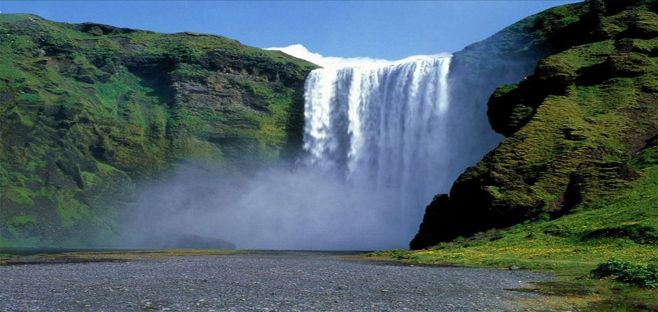
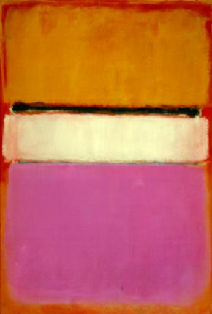

현재 숭실대학교에 재학 중이며 환경,동물,인권에 관심이 많습니다. 가끔씩 자전거 타고 한강 가는 취미를 가지려고 하는데 요즘 많이 바쁩니다.
아직 서투르고 다듬어지지 않은 부문이 많습니다.
"노력"
을 통해 앞으로 착실히 실력을 쌓아 홈페이지를 담아보고 싶은 바람이 담겨있습니다.첫번째 작품은 자연에서 영감을 받았습니다. 폭포를 프로세싱으로 형상화해보고자 했습니다. 폭포는 하늘색 물방울에서 올라오는 띤 흰 색깔과 물결 무늬가 특징입니다. 저는 기본적으로 선이 마우스 위치에 따라 물결 무늬를 남길 수 있는 인터페이스이기에 사용자의 마음대로 폭포현상을 직접 만들 수 있습니다. 인터렉션은 마우스 x,y 축을 따라 형성되는 라인입니다.
두번째 작품은 미국의 대표적인 추상표현주의 화가인 마크 로스코(Rothko·1903~ 1970)의 추상화 ‘화이트 센터(White Center·1950)’입니다. 간단한 도형과 색상의 배치가 감각적인 작품을 프로세싱으로 형상화해보고자 했습니다. 좀더 다채로운 효과를 만들기 위해서 그림이 움직이는 효과를 추가해보았습니다.
 Send a Comments